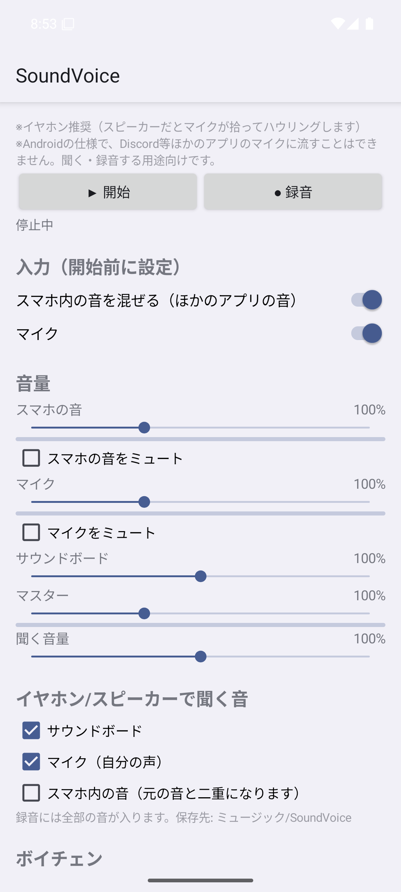
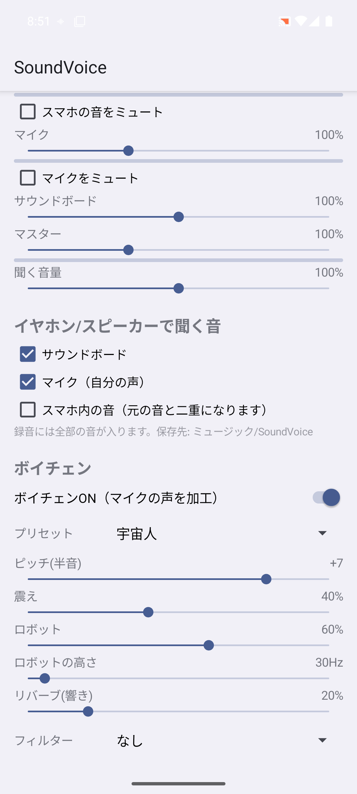

できること
全部ひとつのウィンドウで。設定は自動で保存されます。
デスクトップ音 ＋ マイク
再生中の音（ループバック）と好きなマイクを混ぜて、仮想ケーブルへ出力。それぞれ 0〜300% で音量調整・ミュートできます。
ボイチェン 14 種
女声風・男声風・子ども・ヘリウム・魔王・ロボット・宇宙人・おばけ・電話・ラジオ・メガホン・洞窟など。ピッチ・震え・ロボット・リバーブ・フィルターも細かく調整。
音割れ
ハードクリップ（ガチ音割れ）・ソフト・ビットクラッシュの3種類。全体／マイクだけ／デスクトップだけにかけられ、強さも自由。
サウンドボード
8 枠に効果音を割り当ててワンタッチ再生。WAV / MP3 / OGG / FLAC に対応し、自分のイヤホンにも流せます。
グローバルホットキー
ゲーム中でも効くショートカット。押している間だけ音割れ、ボイチェン切り替え、ミュート、効果音など。F13〜F24 やマウスのサイドボタンも使えます。
モニター（自分で聞く）
加工した自分の声やサウンドボードを、ヘッドホンで確認。何を聞くかはサウンドボード・マイク・デスクトップ音から選べます。
ノイズゲート・エコー
キーボードの音や環境音をカットするノイズゲートと、ディレイ・繰り返しを調整できるエコー。
Android 版もあり
マイクとスマホ内の音を混ぜて、ボイチェンや音割れをかけて聞いたり録音したりできます。
画面
タブを切り替えて見てみてください。
使い方（Windows）
最初の1回だけ、仮想ケーブルの準備がいります。
- VB-CABLE を入れるvb-audio.com/Cable からダウンロードし、
VBCABLE_Setup_x64.exeを「管理者として実行」。終わったら PC を再起動します。 - 名前を「soundvoice Output」に変えるサウンドの設定 → その他のサウンド設定 →「録音」タブで
CABLE Outputを右クリック → プロパティ → 名前をsoundvoice Outputに変更。（変えなくても使えます） - SoundVoice Mixer を起動して「▶ 開始」出力先には自動で
CABLE Inputが選ばれます。デスクトップ音とマイクを選んで開始するだけ。 - Discord などでマイクを選ぶ入力デバイスに
soundvoice Output（またはCABLE Output）を選べば完成です。
Android 版
Android 10 以上。スマホだけで、声の加工や録音を楽しめます。


- マイク ＋ スマホ内の音（ほかのアプリの音）のミックス
- ボイチェン 14 種・音割れ・ノイズゲート・エコー
- サウンドボード 8 枠（MP3 / WAV / OGG / M4A）
- 全部の音を WAV で録音（ミュージック/SoundVoice に保存）
- 画面を閉じても動き続ける（通知から停止）
- Discord などほかのアプリのマイクに流すこと（Android の仕様で、root 化なしでは不可能）
- 音の取り込みを禁止しているアプリ（一部のゲームなど）の音を拾うこと
「開始」を押すと「画面の録画/キャスト」の確認が出ます。スマホ内の音を拾うための許可で、画面は録画しません。スピーカーだとハウリングするので、イヤホン推奨です。
よくある質問
起動すると「Windows によって PC が保護されました」と出る
署名していない個人制作のアプリなので、初回に SmartScreen の警告が出ることがあります。「詳細情報」→「実行」で起動できます。
音がループする・ハウリングする
「デスクトップ音」と「出力先」に同じデバイスを選ぶとループします（アプリが警告を出します）。モニターをスピーカーで鳴らすときは「モニターで聞く音」のデスクトップ音をオフにしてください。
設定はどこに保存される？
exe と同じフォルダの settings.json です。exe を別の場所に移すときは、一緒に移すと設定を引き継げます。
起動に少し時間がかかる
1つの exe にまとめているため、起動のたびに中身を展開しています。数秒で開きます。
VB-CABLE 以外の仮想ケーブルでも使える？
使えます。出力先に好きな再生デバイス（Voicemeeter の入力など）を選べます。
Python で動かしたい／中身を見たい
ソースコードは GitHub にあります。pip install -r requirements.txt のあと python soundvoice_mixer.py で起動できます。